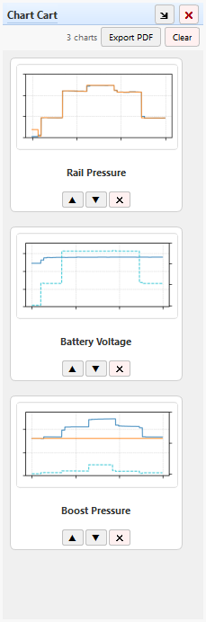

The Chart Cart is a collection tray for charts. Build a chart on the main canvas – a Quick Chart, a My Chart, or a custom PID selection – add it to the cart, then keep going. When you're done, export every chart in the cart to a single multi-page PDF in one click, complete with chain-of-custody metadata.

The cart lives in a dockable panel on the right side of the main window (tabbed with the Log Console by default). Each chart you add appears as a small card with a live thumbnail, a title, and controls to reorder or remove it.
Typical use: capture several charts while working through the seven-step diagnostic process, then hand a customer or service writer one PDF that documents everything you looked at.
Build any chart on the main canvas – a Quick Chart, a My Chart, or a custom PID selection – then add it using any of these:
| Method | Details |
|---|---|
| Cart icon on the chart toolbar | Click the shopping-cart button in the chart's own toolbar. See Chart Controls for the full toolbar layout. |
| Menu | Chart → Add to Chart Cart |
| Keyboard shortcut | Ctrl + Shift + C – see Keyboard Shortcuts |
Each add drops a full copy of the current chart – its PIDs, axis ranges, and chart type – into the cart. Later changes on the canvas don't affect charts already in the cart; each card is an independent snapshot.
Across the top of the panel:
| Control | Description |
|---|---|
| N charts | Running count of how many charts are currently in the cart. |
| Export PDF | Exports every chart in the cart to a single multi-page PDF. See Exporting to PDF below. |
| Clear | Removes every chart from the cart at once. Asks for confirmation first, since it can't be undone. |
Below that, each chart is shown as its own card:
The panel automatically re-flows cards into more or fewer columns as you resize or float it, and scrolls vertically once you have more charts than fit on screen.
Double-click any card to load that chart back onto the main canvas for editing – its PIDs are restored to the PID panel and its axis ranges to the toolbar controls, exactly as they were when it was added.
While you're editing a cart chart this way, the cart button on the chart toolbar switches from Add to Cart to Save changes to this cart chart (its tooltip updates to match). Clicking it now overwrites that same card in place instead of adding a new one.
Click Export PDF and choose a save location. Snapshot Decoder renders one page per cart chart, in the order shown in the panel, at 11×8.5" landscape. Every page includes:
This is the same metadata footer used by the single-chart Save as PDF export on the chart toolbar – see Chart Controls – but combined into one file covering every chart you collected.
| Control | Description |
|---|---|
View → Chart Cart |
Toggles the Chart Cart dock's visibility from the main menu. |
| ↗ (title bar) | Pops the panel out into its own floating window, or docks it back – the icon flips to ↘ while floating. |
| ✕ (title bar) | Closes the dock. Reopen it with View → Chart Cart. |
The Chart Cart is tabbed with the Log Console dock by default – drag either tab to rearrange them, or drag the whole panel to a different edge of the window.
The cart only exists in memory for the current session – it isn't written to disk. It's cleared whenever:
File → Close SnapshotBecause of this, Snapshot Decoder always asks for confirmation before opening a new file or closing the current one whenever a snapshot is loaded, warning that current charts and the chart cart "cannot be saved." Export to PDF first if you want to keep what's in the cart.